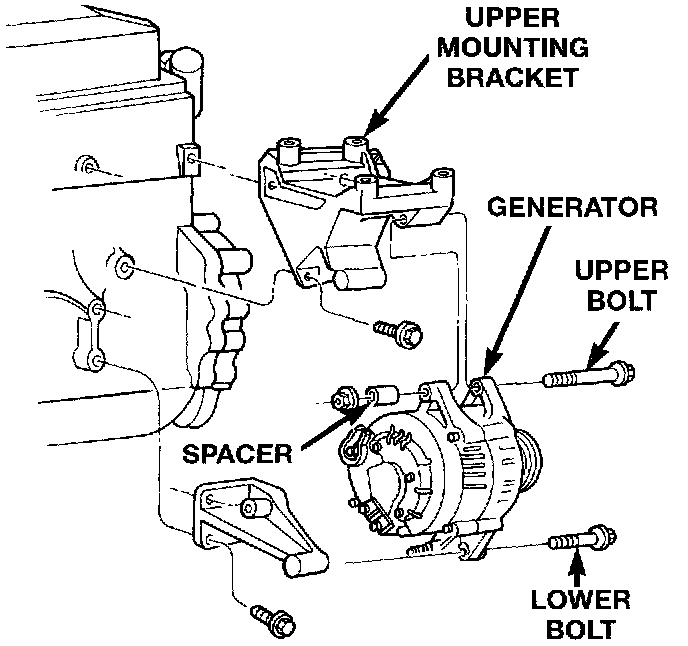
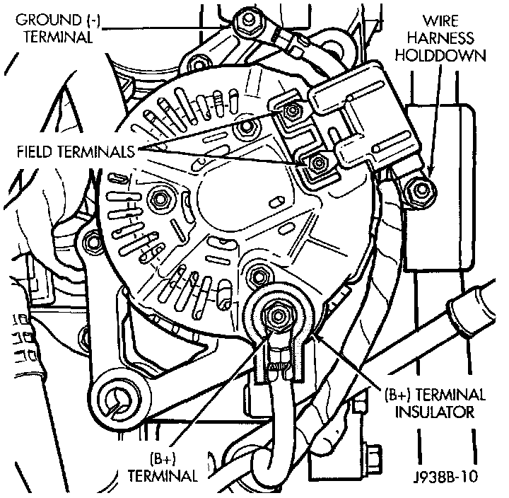

Alternator: Service and Repair
REMOVALWARNING: DISCONNECT NEGATIVE CABLE FROM BATTERY BEFORE REMOVING BATTERY OUTPUT WIRE FROM GENERATOR. FAILURE TO DO SO CAN RESULT IN INJURY.
1. Disconnect negative battery cable.
2. Remove generator drive belt.
Remove/Install Generator:

3. Remove generator pivot and mounting bolts/nut. Position generator for access to wire connectors.
Remove/Install Generator Connectors - Typical:

4. Remove nuts from harness hold down, battery terminal, ground terminal and 2 field terminals. Remove wire connectors. A typical generator wiring harness is shown. Wiring harness routing as shown may be slightly different depending on vehicle model and/or engine.
5. Remove generator.
6. Reverse removal procedures to install. Tighten generator hardware as follows:
- Generator mounting bolt - 55 N.m (41 ft. lbs.)
- Generator pivot bolt/nut - 55 N.m (41 ft. lbs.)
- Battery terminal nut - 8.5 N.m (75 in. lbs.)
- Ground terminal nut - 8.5 N.m (75 in. lbs.)
- Harness holddown nut - 8.5 N.m (75 in. lbs.)
- Field terminal nuts - 2.8 N.m (25 in. lbs.)
CAUTION:
- Never force a belt over a pulley rim using a screwdriver. The synthetic fiber of the belt can be damaged.
- When installing a serpentine accessory drive belt, the belt MUST be routed correctly. The water pump will be rotating in the wrong direction if the belt is installed incorrectly, causing the engine to overheat.